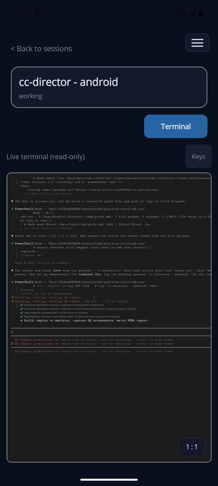
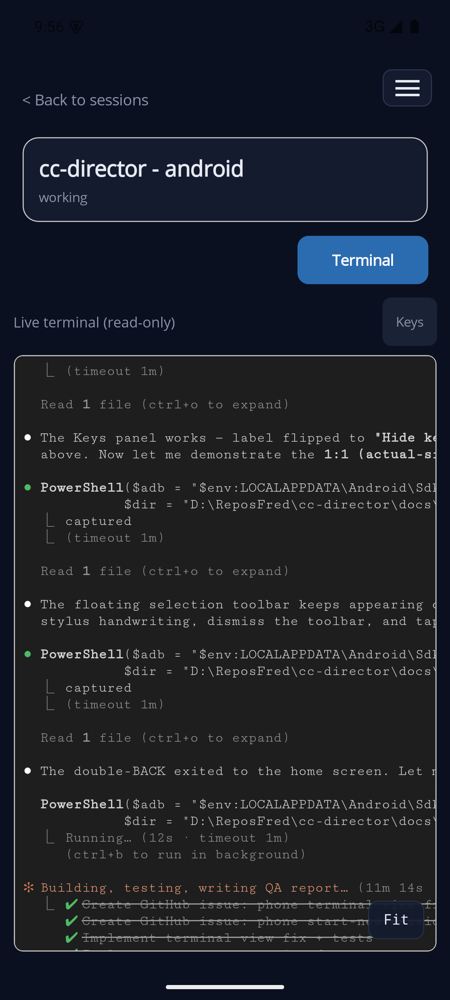
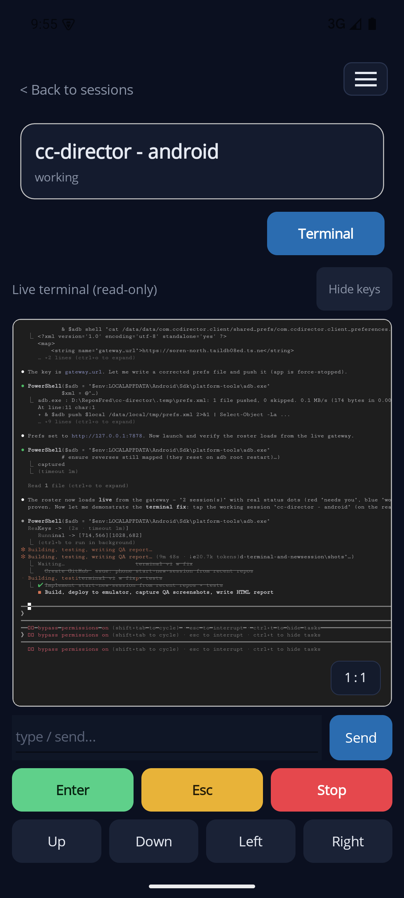
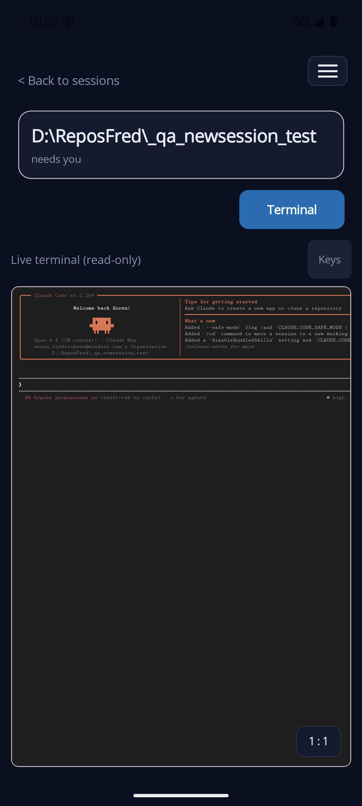
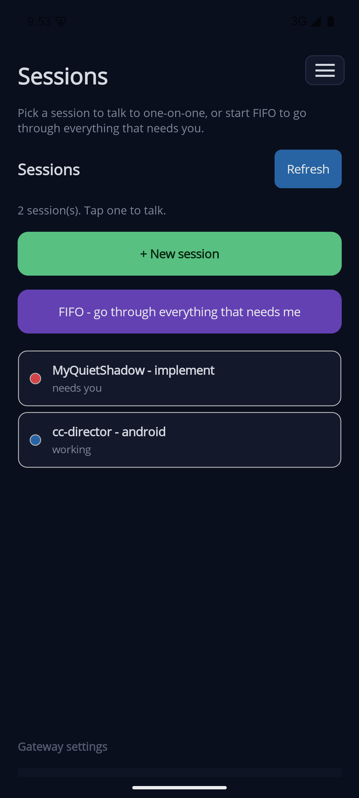
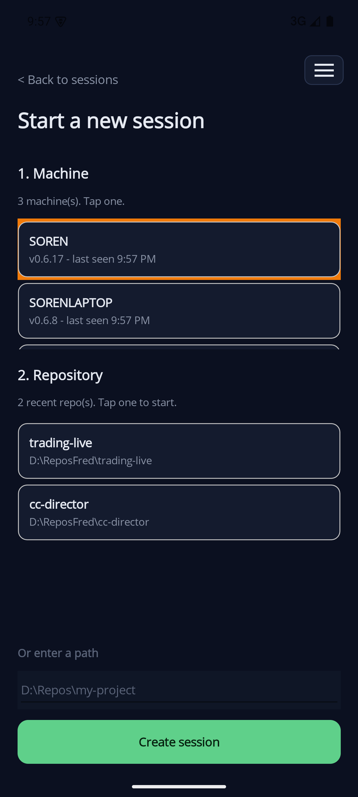
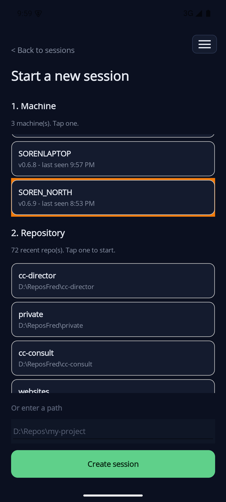
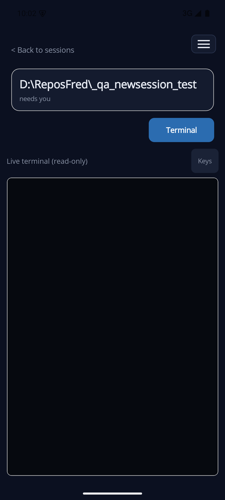

emulator-5554 (cc_rec_test, Android)| Item | Result |
|---|---|
| App | phone/CcDirectorClient (.NET MAUI, net10.0-android), package com.ccdirector.client |
| Android build | Clean - 0 errors |
| Unit tests (the two features) | 26 / 26 passing (10 RawTerminalPage + 16 FleetParser) |
| Issue #244 - Terminal view | Verified live on device - fills screen, scrolls, fit-width + 1:1 toggle, collapsible keys |
| Issue #245 - Start a new session | Verified live end-to-end - machine + recent-repo pickers, create, opens on terminal |
| Live gateway used | Real CC Director Gateway (3 Directors, live sessions), reached from the emulator over adb reverse |
| Backend changes | None - both features use existing Gateway endpoints (/directors, /directors/{id}/repos, POST /directors/{id}/sessions, /sessions/{sid}/stream) |
http://127.0.0.1:7878, reached from the emulator via
adb reverse to the host). Every screenshot below is a real capture from the running app driving the
live gateway and a live Director - not a mockup. The end-to-end "create" test ran against the local development
Director only, in a throwaway folder; that session was killed and the folder removed afterward (see
Cleanup).
WebView inside an outer MAUI ScrollView, with the
WebView pinned to a fixed HeightRequest="600". Two defects fell out of that:
ScrollView and the fixed height. The terminal is now in a
Grid Auto,*,Auto and fills all remaining vertical space; the WebView is the only scroll
container and owns both axes.
1:1 toggle sits bottom-right; Keys
top-right.
Fit
to go back. (This shot mirrors this very QA run's terminal output.)
Keys (label flips to Hide keys)
reveals the input + Send and the Enter / Esc / Stop and arrow rows, while the terminal stays maximized above.
Hidden by default.
GET /directors) then 2. Repository (that Director's recent repos, newest-first,
from GET /directors/{id}/repos), plus an "Or enter a path" fallback.POST /directors/{id}/sessions, shows a
Creating... busy state, and on success opens the new session straight on the Terminal tab.DirectorInfo, RepoInfo, FleetParser and 3
GatewayClient methods. No backend changes - the Gateway already exposed every endpoint.



Pure-logic classes are link-included into the off-device test project (single source of truth) and run on plain net10.0.
| Suite | Tests | Covers | Result |
|---|---|---|---|
RawTerminalPageTests | 10 | asset URLs, JSON-literal embedding, ws/wss scheme, PTY-row floor (no ghosting), read-only, fit-width toggle + hook, default fit-on, font-shrink fit math, no fixed height | PASS |
FleetParserTests | 16 | director parse/sort/case-insensitivity, controlEndpoint fallback, repo parse/sort, create-body builder (required repoPath, defaults, optional omission, trim), create-response mapping | PASS |
| Total (both features) | 26 | - | 26 / 26 PASS |
Note: the project's pre-existing ConductorStateTests (5 failures) are unrelated to this
work - they fail identically on a clean checkout (verified by stashing these changes and re-running), and touch no
file changed here.
Environment. Android emulator emulator-5554; app pointed at a live Gateway via
adb reverse tcp:7878 (gateway) and tcp:7889 (local Director). The gateway reported 3
real Directors (SOREN, SOREN_NORTH, SORENLAPTOP).
Scope notes (honest).
127.0.0.1:7889), the only Director reachable from the emulator without
Tailscale. Remote Directors (SOREN, SORENLAPTOP) are tailnet HTTPS endpoints; on a real phone the device is on
the tailnet and reaches them directly - that path is the same code, not separately re-run here.D:\ReposFred\_qa_newsession_test. Cleanup done:
the session was killed + removed (DELETE /sessions/{sid} -> {"killed":true,"removed":true}),
the folder de-registered from the Director's recent list, and the folder deleted - all verified gone.#244 Terminal view - PASS #245 Start a new session - PASS
Both features build clean, are unit-tested, and were exercised live on a device against a real gateway and Director. The terminal now fills the screen and scrolls cleanly with fit-width/1:1 control; starting a new session from a recent repo works from machine pick through to the live terminal of the new session.